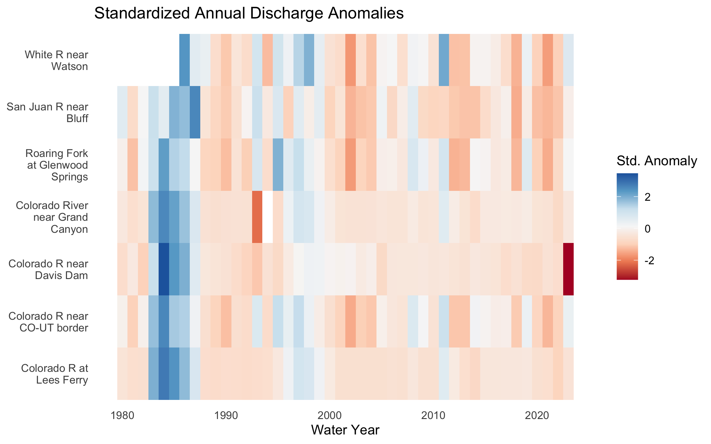
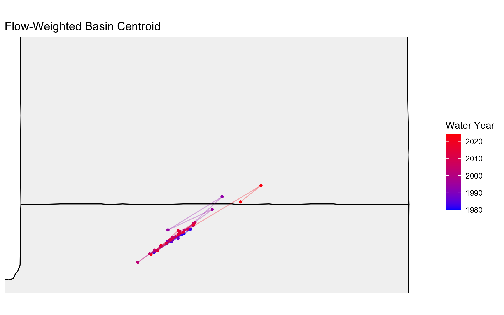
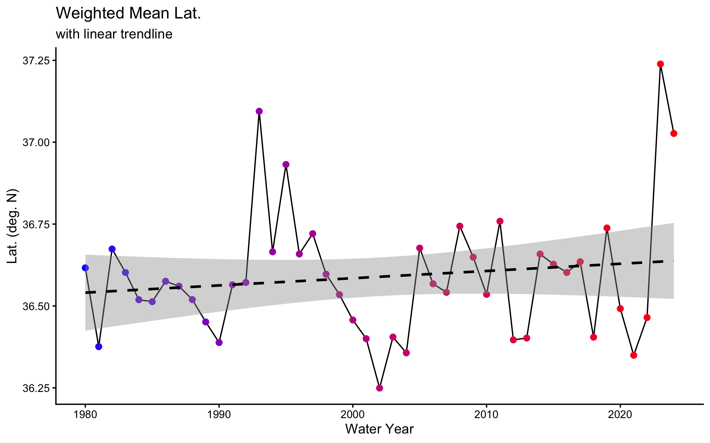
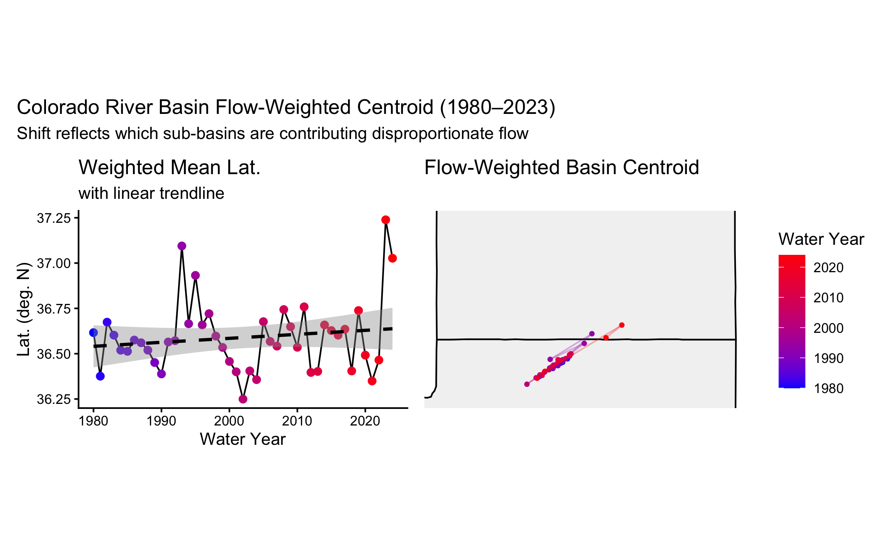
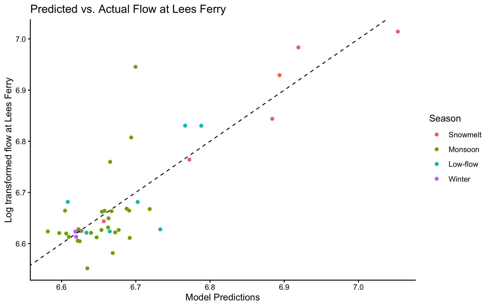

Code
knitr::include_graphics('img/colorado-river.jpg')
An end-to-end investigation from raw USGS records to a predictive model of the Compact accounting point
knitr::include_graphics('img/colorado-river.jpg')
In January 2023, the federal government announced the first-ever Tier 3 shortage on the Colorado River, triggering mandatory cuts in the Lower Basin. Those cuts were calculated from streamflow records like the ones this investigation is built on.
The Colorado River Basin supplies drinking water to 40 million people across 7 US states, irrigates 5 million acres of farmland, and is governed by one of the oldest and most contested interstate compacts in American history: the Colorado River Compact of 1922. Understanding how streamflow varies across this system is essential for water managers, federal agencies, tribal water rights holders, and scientists navigating a river under compounding stress from drought, overallocation, and climate change.
This investigation works with streamflow records pulled directly from the USGS National Water Information System (NWIS). It builds a complete analytical pipeline: from raw API call to normalized comparisons, threshold detection, basin-wide trend visualization, and a predictive model of the Compact’s key accounting point.
The analysis draws on the dataRetrieval package to pull 44 years of daily mean discharge from 7 long-record gauges spanning the Colorado River’s main stem and major tributaries.
The libraries below support the full pipeline, from retrieval through modeling and table formatting:
if (!requireNamespace("pacman", quietly = TRUE)) install.packages("pacman")
library("pacman")
pacman::p_load(
tidyverse,
dataRetrieval,
zoo,
patchwork,
flextable,
lubridate,
broom,
flextable
)The USGS parameter code for discharge is 00060 (cubic feet per second), and the statistic code 00003 is the daily mean value. dataRetrieval constructs and queries the NWIS REST API at this endpoint:
https://waterservices.usgs.gov/nwis/dv/?sites=09380000¶meterCd=00060&statCd=00003Pulling all seven gauges from 1980 through 2023 in a single call:
gauges <- tribble(
~site_no, ~name, ~state,
"09380000", "Colorado R at Lees Ferry", "AZ",
"09163500", "Colorado R near CO-UT border", "CO",
"09085000", "Roaring Fork at Glenwood Springs","CO",
"09306500", "White R near Watson", "UT",
"09379500", "San Juan R near Bluff", "UT",
"09402500", "Colorado River near Grand Canyon","AZ",
"09423000", "Colorado R near Davis Dam", "NV"
)
raw <- readNWISdv(
siteNumbers = gauges$site_no,
parameterCd = "00060",
startDate = "1980-01-01",
endDate = "2023-12-31"
) %>%
renameNWISColumns() %>% # renames X_00060_00003 Flow
left_join(gauges, by = "site_no") %>%
select(site_no, name, state, Date, Flow)
glimpse(raw)Rows: 109,212
Columns: 5
$ site_no <chr> "09085000", "09085000", "09085000", "09085000", "09085000", "0…
$ name <chr> "Roaring Fork at Glenwood Springs", "Roaring Fork at Glenwood …
$ state <chr> "CO", "CO", "CO", "CO", "CO", "CO", "CO", "CO", "CO", "CO", "C…
$ Date <date> 1980-01-01, 1980-01-02, 1980-01-03, 1980-01-04, 1980-01-05, 1…
$ Flow <dbl> 620, 605, 582, 582, 575, 590, 582, 582, 582, 590, 560, 598, 59…Across ~7 gauges × 44 years × 365 days, the pull returns roughly 112,000 rows of daily mean discharge.
A reproducible snapshot of current conditions is the water resources analyst’s morning deliverable to Colorado River Compact stakeholders. To be re-runnable on any date with a single change, the analysis is built around a date parameter rather than hardcoded values.
The reference date here is the last day of water year 2023 (September 30, 2023).
my.date <- as.Date("2023-09-30")
class(my.date)[1] "Date"The day-over-day change in discharge: how much flow rose or fell against the previous day? A daily delta is more actionable than the raw level alone, since it signals whether conditions are improving or deteriorating.
daily_q <- raw %>%
group_by(site_no) %>%
mutate(flow_delta = Flow - dplyr::lag(Flow)) %>%
ungroup()Filtering to the reference date gives two views of conditions: where flow is greatest right now, and where it is rising fastest.
max_q_table <- daily_q %>% filter(Date == my.date) %>%
select(site_no, name, Flow) %>%
slice_max(Flow, n = 5) %>%
mutate(Flow = round(Flow)) %>%
flextable() %>%
set_header_labels(
name = "Gauge Name",
Flow = "Daily Mean Flow (cfs)",
site_no = "Gauge Number"
) %>%
set_caption(caption = paste("Top 5 sites with highest flow on", my.date)) %>%
autofit()
max_q_tableGauge Number | Gauge Name | Daily Mean Flow (cfs) |
|---|---|---|
09402500 | Colorado River near Grand Canyon | 6,950 |
09380000 | Colorado R at Lees Ferry | 6,570 |
09163500 | Colorado R near CO-UT border | 3,470 |
09379500 | San Juan R near Bluff | 680 |
09085000 | Roaring Fork at Glenwood Springs | 533 |
max_qdelta_table <- daily_q %>% filter(Date == my.date) %>%
select(site_no, name, flow_delta)%>%
slice_max(flow_delta, n = 5) %>%
mutate(flow_delta = round(flow_delta)) %>%
flextable() %>%
set_header_labels(
name = "Gauge Name",
flow_delta = "Dily Flow Delta (cfs)",
site_no = "Gauge Number"
) %>%
set_caption(caption = paste("Top 5 sites with highest daily flow increase on", my.date)) %>%
autofit()
max_qdelta_tableGauge Number | Gauge Name | Dily Flow Delta (cfs) |
|---|---|---|
09085000 | Roaring Fork at Glenwood Springs | 8 |
09306500 | White R near Watson | -7 |
09380000 | Colorado R at Lees Ferry | -10 |
09402500 | Colorado River near Grand Canyon | -20 |
09163500 | Colorado R near CO-UT border | -50 |
Raw discharge numbers alone don’t tell the full story. Lees Ferry always carries more water than the San Juan at Bluff because it drains over 111,000 square miles versus the San Juan’s ~23,000. To compare these sites meaningfully, each gauge’s drainage area has to be joined in from a separate metadata table. Here, we pull basin metadata from NWIS:
site_meta <- readNWISsite(gauges$site_no) %>%
select(
site_no,
drain_area_va, # drainage area in square miles
huc_cd, # 8-digit HUC watershed code
dec_lat_va, # latitude
dec_long_va # longitude
)
# Is site_no actually unique? If any row shows n > 1, the join will duplicate rows
site_meta %>% count(site_no) %>% filter(n > 1)[1] site_no n
<0 rows> (or 0-length row.names)Because one gauge maps to many daily flow records, this is a one-to-many relationship: site_no is the primary key in site_meta and a foreign key in the flow data. A left_join keyed on site_no keeps all flow records regardless of whether metadata is available.
df <- daily_q %>%
left_join(site_meta, by = "site_no")
# Verify join
glimpse(df)Rows: 109,212
Columns: 10
$ site_no <chr> "09085000", "09085000", "09085000", "09085000", "0908500…
$ name <chr> "Roaring Fork at Glenwood Springs", "Roaring Fork at Gle…
$ state <chr> "CO", "CO", "CO", "CO", "CO", "CO", "CO", "CO", "CO", "C…
$ Date <date> 1980-01-01, 1980-01-02, 1980-01-03, 1980-01-04, 1980-01…
$ Flow <dbl> 620, 605, 582, 582, 575, 590, 582, 582, 582, 590, 560, 5…
$ flow_delta <dbl> NA, -15, -23, 0, -7, 15, -8, 0, 0, 8, -30, 38, 0, 22, 15…
$ drain_area_va <dbl> 1453, 1453, 1453, 1453, 1453, 1453, 1453, 1453, 1453, 14…
$ huc_cd <chr> "140100041003", "140100041003", "140100041003", "1401000…
$ dec_lat_va <dbl> 39.54667, 39.54667, 39.54667, 39.54667, 39.54667, 39.546…
$ dec_long_va <dbl> -107.3308, -107.3308, -107.3308, -107.3308, -107.3308, -…nrow(df) == nrow(daily_q)[1] TRUEsum(is.na(df$drain_area_va)) == 0[1] TRUE#confirm join with a know row
df %>%
filter(Date == my.date, site_no == "09085000")# A tibble: 1 × 10
site_no name state Date Flow flow_delta drain_area_va huc_cd
<chr> <chr> <chr> <date> <dbl> <dbl> <dbl> <chr>
1 09085000 Roaring Fork … CO 2023-09-30 533 8 1453 14010…
# ℹ 2 more variables: dec_lat_va <dbl>, dec_long_va <dbl>I used a left join to maintain all gauge records regardless of if they had metadata and joined by site_no. Verification revealed no unexpected changes in data frame dimensions or loss of values: row count is unchanged, there are no unexpected NAs in the joined drainage-area column, and a spot-checked value is correct. These three checks: row count, NA count, and a known value, run after every join in this investigation, because they cost seconds and catch errors that would otherwise corrupt every downstream calculation silently.
Lees Ferry’s high discharge reflects its enormous watershed, not necessarily more intense rainfall or runoff. To compare runoff intensity across sites with different drainage areas, flow is normalized per unit area: cfs per square mile.
df <- df %>%
mutate(flow_per_sqmi = Flow/drain_area_va)On the reference date, placing raw and normalized rankings side by side for all 7 gauges shows how much the picture changes once watershed size is removed:
df %>%
filter(Date == my.date) %>%
select(name, Flow, flow_per_sqmi, drain_area_va) %>%
mutate(raw_rank = rank(-Flow),
norm_rank = rank(-flow_per_sqmi),
flow_per_sqmi = round(flow_per_sqmi, digits = 4)) %>%
arrange(raw_rank) %>%
flextable() %>%
set_header_labels(
name = "Gauge Name",
Flow = "Raw Discharge (cfs)",
drain_area_va = "Drainage area (mi^2)",
flow_per_sqmi = "Normalized Flow (cfs/mi^2)",
raw_rank = "Raw Rank",
norm_rank = "Normalized Rank"
) %>%
set_caption(caption = paste("Area normalized discharge on", my.date)) %>%
autofit()Gauge Name | Raw Discharge (cfs) | Normalized Flow (cfs/mi^2) | Drainage area (mi^2) | Raw Rank | Normalized Rank |
|---|---|---|---|---|---|
Colorado River near Grand Canyon | 6,950 | 0.0491 | 141,600 | 1 | 5 |
Colorado R at Lees Ferry | 6,570 | 0.0588 | 111,800 | 2 | 4 |
Colorado R near CO-UT border | 3,470 | 0.1944 | 17,849 | 3 | 2 |
San Juan R near Bluff | 680 | 0.0296 | 23,000 | 4 | 6 |
Roaring Fork at Glenwood Springs | 533 | 0.3668 | 1,453 | 5 | 1 |
White R near Watson | 329 | 0.0818 | 4,020 | 6 | 3 |
The ranks differ because some of the gauges in this analysis are downstream of others and have much larger drainage area, so more discharge is expected on these lower, higher order sites. The Roaring Fork River has the largest rank change between raw flow and normalized flow, which is because it is a mountainous headwater of the system that receives higher precipitation per unit area. Raw discharge is suitable for analyzing interstate government compliance, like CRC obligations at Lees Ferry, while normalized discharge is useful for analysis comparing sub basins with different areas.
Managers don’t just watch absolute flow levels, they watch how current conditions compare to historical norms. The standard operational metric is the 7Q10: the lowest 7-day average flow expected to occur once in 10 years. This analysis uses a related approach: flagging when the 7-day rolling mean falls below the historical 10th percentile.
The USGS computes official low-flow statistics — including the 7Q10 — and makes them accessible via dataRetrieval::readNWISstat(). The thresholds computed here closely approximate those official values and follow the same logic water rights lawyers and regulators actually use.
For each gauge, the 7-day rolling mean of daily discharge (via zoo::rollmean(), right-aligned) smooths daily noise so each value represents the current and 6 preceding days:
df <- df %>%
group_by(site_no) %>%
mutate(rollmean_7day = rollmean(x = Flow, k = 7, fill = NA, align = "right")) %>%
ungroup()The low-flow threshold is defined per gauge as the 10th percentile of its historical discharge during 1980–2010. Thresholds are site-specific.
q_threshold <- df %>%
filter(year(Date) >= 1980 & year(Date) <= 2010) %>% #threshold date range
group_by(site_no) %>%
summarise(q10 = quantile(Flow, probs = 0.10, na.rm = TRUE))
df <- df %>%
left_join(q_threshold, by = "site_no")
# No unexpected df growth, 12 to 13 columns
sum(is.na(df$q10)) == 0[1] TRUE# delta should be 8 cfs
df %>%
filter(Date == my.date, site_no == "09085000")# A tibble: 1 × 13
site_no name state Date Flow flow_delta drain_area_va huc_cd
<chr> <chr> <chr> <date> <dbl> <dbl> <dbl> <chr>
1 09085000 Roaring Fork … CO 2023-09-30 533 8 1453 14010…
# ℹ 5 more variables: dec_lat_va <dbl>, dec_long_va <dbl>, flow_per_sqmi <dbl>,
# rollmean_7day <dbl>, q10 <dbl>A logical below_threshold column marks every day the 7-day rolling mean falls below the gauge’s threshold:
df <- df %>%
mutate(below_threshold = if_else(rollmean_7day <= q10, TRUE, FALSE))
df %>%
count(below_threshold)# A tibble: 3 × 2
below_threshold n
<lgl> <int>
1 FALSE 97941
2 TRUE 11229
3 NA 42Focusing on Lees Ferry (site 09380000, the Compact’s primary accounting point) the 7-day rolling mean from 2000–2023 shows how often conditions dropped below the historical threshold, shaded in red:
# get threshold value for Lees Ferry
lees_threshold <- q_threshold %>%
filter(site_no == "09380000") %>%
pull(q10) %>%
unname()
# create below perdiod for visualizaiton
below_periods <- df %>%
filter(site_no == "09380000",
below_threshold == TRUE,
year(Date) >= 2000 & year(Date) <= 2023)
df %>%
filter(site_no == "09380000",
year(Date) >= 2000 & year(Date) <= 2023) %>%
ggplot(aes(x = Date, y = rollmean_7day)) +
geom_rect(data = below_periods,
aes(xmin = Date, xmax = Date + 1, ymin = -Inf, ymax = Inf),
fill = "red", alpha = 0.2, inherit.aes = FALSE) +
geom_line()+
geom_hline(yintercept = lees_threshold, color = "red", linetype = "dashed")+
labs(
y = "Mean Flow (cfs)",
title = "Colorado River at Lees Ferry: 7-Day Rolling Mean Discharge",
subtitle = "Red shading indicates periods below 10th percentile threshold (1980–2010 baseline)",
)+
theme_classic()
Comparing the average number of below-threshold days per year across 2000–2010 versus 2011–2023 separates isolated dry years from a persistent baseline shift:
thresh_comp <- df %>%
filter(year(Date) >= 2000 & year(Date) <= 2023,
site_no == "09380000") %>%
mutate(period = if_else(year(Date) <= 2010, "2000_2010", "2011_2023"),
year = year(Date)) %>%
group_by(period, year) %>%
summarise(days_below = sum(below_threshold, na.rm = TRUE)) %>%
ungroup() %>%
group_by(period) %>%
summarise(avg_days_below = round(mean(days_below), 1),
n_years = n_distinct(year))
flextable(thresh_comp) %>%
set_header_labels(
period = "Period",
avg_days_below = "Days",
n_years = "Years in period"
) %>%
set_caption(caption = "Avg. annual days below Q10 threshold") %>%
autofit()Period | Days | Years in period |
|---|---|---|
2000_2010 | 36.6 | 11 |
2011_2023 | 27.5 | 13 |
The number of days below the threshold decreased from 36.6 to 27.5 in the 2011-2023 period. The change looks to be mainly due to the severe drought surrounding between 2000-2005, which had high consistent days below the threshold. While the later period didn’t have a drought that continuous, 2023 was the year with the most days below the threshold from 2000-2023, indicating that the severity of shortages may be increasing. These data suggest that the upper basin is struggling to meet CRC requirements during drought years, if a shortage with the severity of 2023 and the consistency of the ~2002 drought occurs, the upper basin will likely be badly out of compliance with the CRC, especially if consistent drought decreases Lake Powell storage, as is currently happening.
Aggregating to gauge and water year gives total annual discharge, peak daily discharge, and the number of days below the low-flow threshold for each site-year:
df <- df %>%
mutate(water_year = calcWaterYear(Date)) #used the dataRetrival function
# print(df %>%
# group_by(site_no, name, water_year) %>%
# summarise(sum_na = sum(is.na(Flow))), n = 400)
year_df <- df %>%
group_by(site_no, name, water_year) %>%
summarise(
annual_q = sum(Flow),
peak_q = max(Flow),
days_below_threshhold = sum(below_threshold, na.rm = TRUE)
) %>%
ungroup()
glimpse(year_df)Rows: 307
Columns: 6
$ site_no <chr> "09085000", "09085000", "09085000", "09085000", …
$ name <chr> "Roaring Fork at Glenwood Springs", "Roaring For…
$ water_year <dbl> 1980, 1981, 1982, 1983, 1984, 1985, 1986, 1987, …
$ annual_q <dbl> 432890, 271835, 469712, 603893, 765741, 644976, …
$ peak_q <dbl> 7170, 4110, 5500, 11200, 9510, 9690, 7020, 5720,…
$ days_below_threshhold <int> 0, 103, 0, 11, 0, 0, 0, 0, 2, 47, 155, 50, 84, 5…Plotting total annual discharge at Lees Ferry by water year, with years above the long-term median in blue and below in red, exposes the structural shift in the record:
# compute long term median
lees_median <- year_df %>%
filter(site_no == "09380000",
water_year >= 1980 & water_year <= 2023) %>%
pull(annual_q) %>%
median(na.rm = TRUE) #Removing NAs just in case, but Lees data should be complete for this period
year_df %>%
filter(site_no == "09380000",
water_year >= 1980 & water_year <= 2023) %>%
ggplot(aes(x = water_year, y = annual_q, fill = annual_q >= lees_median))+ #creat a logical vector to map colors onto
geom_col()+
geom_hline(yintercept = lees_median,
color = "red", linetype = "dashed")+
scale_fill_manual(values = c("TRUE" = "blue", "FALSE" = "red"),
labels = c("TRUE" = "Above median", "FALSE" = "Below median"),
name = NULL)+
labs(
title = "Annual discharge at Lees Ferry",
subtitle = "Dashed line = annual median (1980–2023)",
x = "Water Year",
y = "Total Annual Discharge (cfs)"
) +
theme_classic()+
theme(legend.position = "bottom") 
# need to write out The records suggests that periods of high runoff may be decreasing over time. The graph shows several anomalous peaks in the 80s and late 90s, in particular the peak around 1983-84 is related to a massive snow year and the near total failure of Glen Canyon Dam which caused high flows at Lees Ferry. This trend is troubling, as historically high flow periods allowed Lake Powell to recharge and bank water for CRC compliance in low years; less high flow years will contribute to the depletion of reservoir levels as well as impact the 10 year 7.5 million AF average used for compact accounting.
A single gauge tells you about one location. To understand whether drought is consistent across the entire basin or whether some tributaries are diverging from the main stem all gauges need to be compared simultaneously on the same scale.
Raw discharge can’t serve this purpose: a large-watershed gauge will always dominate. The solution is a standardized anomaly : each year’s flow expressed as standard deviations above or below the site’s own baseline mean:
\[\text{anomaly} = \frac{\bar{Q}_{year} - \bar{Q}_{baseline}}{\sigma_{baseline}}\]
Where baseline = 1980–2010. An anomaly of –2 means “two standard deviations below normal for this gauge” which is directly comparable to the same metric at any other gauge. The baseline mean and SD are computed per gauge, joined back to the annual table (with row counts and NAs verified), and used to compute the anomaly for every gauge-year:
baseline <- year_df %>%
filter(water_year >= 1980 & water_year <= 2010) %>%
group_by(site_no) %>%
summarise(
baseline_sd = sd(annual_q),
baseline_mean = mean(annual_q)
)
glimpse(baseline)Rows: 7
Columns: 3
$ site_no <chr> "09085000", "09163500", "09306500", "09379500", "0938000…
$ baseline_sd <dbl> 142955.68, 995806.51, 79407.67, 348861.83, 1818255.53, 1…
$ baseline_mean <dbl> 442662.4, 2350170.0, 244230.1, 744205.5, 5255319.7, 5339…# left joing to maintain all yearly flow data
annual <- year_df %>%
left_join(baseline, by = "site_no")
# no unexpected NAs
sum(is.na(annual$baseline_sd)) == 0 [1] TRUEsum(is.na(annual$baseline_mean)) == 0[1] TRUE# no unexpected growth
nrow(annual) == nrow(year_df)[1] TRUEannual <- annual %>%
mutate(std_anomaly = (annual_q - baseline_mean) / baseline_sd)A heatmap with water year on x, gauge on y, fill = standardized anomaly on a diverging scale centered at zero, makes basin-wide wet and dry years visible at a glance:
annual %>%
filter(water_year != 2024) %>% #2024 not a complete water year
ggplot(aes(x = water_year, y = str_wrap(factor(name), width = 15), fill = std_anomaly)) +
geom_tile() +
scale_fill_distiller(
palette = "RdBu",
direction = 1,
oob = scales::squish,
) +
labs(
title = "Standardized Annual Discharge Anomalies",
x = "Water Year",
y = NULL,
fill = "Std. Anomaly"
) +
theme_minimal() +
theme(
panel.grid = element_blank()
)
The post 2000 drought signal is largely reduced for all gauges below Lake Powell, which makes sense as the reservoir used banked water to continue lower basin deliveries. The wet years around 1983 are evident across the basin caused by the abnormally large snow year in the winter of 82-83 and. In the Post 2020 drought, we see the drought signal more evenly across the basin because there was not an antecedent wet period allowing high reservoir levels like in the post 2000 droughts that could mitigate lower basin shortages. Basin-wide anomalies allow a better picture of the entire basin’s response to shortages, and show how hydrologic conditions have varied impacts geographically.
Beyond whether the basin is wet or dry, the geographic center of streamflow shifts over time. If drought has disproportionately reduced flow in the southern tributaries, the flow-weighted center of the basin should drift north since proportionally more flow is coming from northern headwater gauges. In exceptional snowmelt years it should shift back.
This is measured with the flow-weighted mean position: each gauge’s coordinates weighted by its fraction of total annual basin flow.
\[\bar{X}_{year} = \frac{\sum (lon_i \times Q_i)}{\sum Q_i} \qquad \bar{Y}_{year} = \frac{\sum (lat_i \times Q_i)}{\sum Q_i}\]
Gauge coordinates are joined from site_meta (row counts, NAs, and a known value verified), then weighted mean latitude and longitude are computed for each water year:
site_meta_loc <- site_meta %>%
select(site_no, dec_lat_va, dec_long_va)
annual_loc <- annual %>%
left_join(site_meta_loc, by = "site_no")
# check left join outputs
nrow(annual_loc) == nrow(annual)[1] TRUEsum(is.na(annual_loc$dec_lat_va)) == 0 [1] TRUEsum(is.na(annual_loc$dec_long_va)) == 0 [1] TRUE# days below threshold should be 72
annual_loc %>%
filter(site_no == "09402000",
water_year == "1993")# A tibble: 0 × 11
# ℹ 11 variables: site_no <chr>, name <chr>, water_year <dbl>, annual_q <dbl>,
# peak_q <dbl>, days_below_threshhold <int>, baseline_sd <dbl>,
# baseline_mean <dbl>, std_anomaly <dbl>, dec_lat_va <dbl>, dec_long_va <dbl># compute weighted annual means
annual_loc <- annual_loc %>%
group_by(water_year) %>%
mutate(weighted_long = sum(dec_long_va * annual_q, na.rm = TRUE) /
sum(annual_q, na.rm = TRUE),
weighted_lat = sum(dec_lat_va * annual_q, na.rm = TRUE) /
sum(annual_q, na.rm = TRUE)) %>%
ungroup()A two-panel patchwork figure pairs the annual weighted centers on a western-US basemap (colored blue-to-red through time) with weighted mean latitude over time and its linear trend:
pacman::p_load(patchwork, maps)
centroids <- annual_loc %>%
distinct(weighted_long, weighted_lat, water_year)
western_states <- map_data("state") %>%
filter(region %in% c("arizona", "utah")) #, "colorado", "nevada",
# "new mexico", "california", "wyoming", "idaho"))
map <- ggplot() +
geom_polygon(data = western_states,
aes(x = long, y = lat, group = group),
fill = "grey95", color = "black") +
geom_point(data = centroids,
aes(x = weighted_long, y = weighted_lat, color = water_year),
size = 1, ) +
geom_path(data = centroids,
aes(x = weighted_long, y = weighted_lat, color = water_year),
linewidth = 0.5, alpha = .3) +
scale_color_gradient(low = "blue", high = "red", name = "Water Year") +
coord_sf(xlim = c(-114, -109), ylim = c(36, 39))+
# coord_fixed()+
labs(title = "Flow-Weighted Basin Centroid",
x = NULL, y = NULL) +
theme_minimal() +
theme(panel.grid = element_blank(),
axis.text = element_blank())
map
lat <- centroids %>%
ggplot(aes(x = water_year, y = weighted_lat)) +
geom_line() +
geom_point(aes(color = water_year), size = 2) +
geom_smooth(method = "lm", color = "black", linetype = "dashed") +
scale_color_gradient(low = "blue", high = "red", guide = "none") +
labs(title = "Weighted Mean Lat.",
subtitle = "with linear trendline",
x = "Water Year",
y = "Lat. (deg. N)") +
theme_classic()
lat
lat + map +
plot_annotation(
title = "Colorado River Basin Flow-Weighted Centroid (1980–2023)",
subtitle = "Shift reflects which sub-basins are contributing disproportionate flow"
)
The two years with a northward spike were 1994 and 2023. In both of these years, the headwaters had strong snow years relative to precipitation in the lower basin. El Nino events for both years helped fuel the higher headwaters snow pack for the Colorado Basin. Trends northward in weighted flow indicate that headwaters states are becoming critical regional water supply areas and means that downstream managers have a vested interest in how upper basin states manage their waters.
Annual totals mask important seasonal structure. The Colorado Basin has two distinct runoff pulses: a snowmelt surge in spring (April–June) driven by Rocky Mountain headwater snowpack, and a monsoon pulse in late summer (July–September) driven by convective storms across the Arizona-New Mexico plateau. These seasons respond differently to climate forcing, and under warming, the snowmelt season is arriving earlier.
Each day is assigned to a hydrological season, ordered Snowmelt → Monsoon → Low-flow → Winter:
df <- df %>%
mutate(
month = month(Date),
season = case_when(
month >= 4 & month <= 6 ~ 'Snowmelt',
month >= 7 & month <= 9 ~ 'Monsoon',
month >= 10 & month <= 12 ~ 'Low-flow',
month >= 1 & month <= 3 ~ 'Winter'
),
season = factor(season, levels = c(c('Snowmelt', 'Monsoon', 'Low-flow', 'Winter')))
) Grouping by gauge, water year, and season summarizes total and normalized seasonal discharge:
seasonal_df <- df %>%
group_by(site_no, water_year, season) %>%
summarise(
seasonal_q = sum(Flow, na.rm = TRUE),
norm_seasonal_q = sum(flow_per_sqmi, na.rm = TRUE)
)To test whether peak runoff is shifting in time, the date of peak 7-day mean flow is found for each gauge-year and converted to day-of-year, then plotted against water year for Lees Ferry with a linear trend:
lees_code = "09380000"
df %>%
group_by(site_no, water_year) %>%
slice_max(rollmean_7day, n = 1, with_ties = FALSE) %>%
mutate(yday = lubridate::yday(Date)) %>%
filter(site_no == lees_code) %>%
ggplot(aes(x = water_year, y = yday, color = yday))+
geom_point()+
geom_line()+
geom_smooth(method = "lm", linetype = "dashed", color = "black")+
labs(
x = "Water Year",
y = "Day of year of peak flow",
title = "Peak flow timing at Lees Ferry",
subtitle = "Peak flow determined from a 7 day rolling mean",
color = "Day of Year"
)+
scale_color_gradient(low = "blue", high = "red")+
theme_classic()
df_timing <- df %>%
group_by(site_no, water_year) %>%
slice_max(rollmean_7day, n = 1, with_ties = FALSE) %>%
mutate(yday = lubridate::yday(Date)) %>%
filter(site_no == lees_code)
mod_timing <- lm(yday ~ water_year, data = df_timing)
summary(mod_timing)
Call:
lm(formula = yday ~ water_year, data = df_timing)
Residuals:
Min 1Q Median 3Q Max
-199.763 -59.643 7.118 80.169 195.973
Coefficients:
Estimate Std. Error t value Pr(>|t|)
(Intercept) -3434.336 2299.803 -1.493 0.143
water_year 1.812 1.149 1.577 0.122
Residual standard error: 100.1 on 43 degrees of freedom
Multiple R-squared: 0.0547, Adjusted R-squared: 0.03272
F-statistic: 2.488 on 1 and 43 DF, p-value: 0.122The general trend shows that peak runoff is becoming later in the year at Lees Ferry, however, there is no statistically significant relationship with these data (linear model p-value = 0.122) which is likely due to the gauge being below Powell and having varied and unnatural releases hiding a true signal in noise. An earlier timing would mean that managers would need to have reservoir levels lowered earlier to be ready to capture spring runoff (only if the reservoir actually operates close to capacity).
Lees Ferry is the Compact’s accounting point, the location where upper basin states must deliver flow to lower basin states. Predicting annual discharge at Lees Ferry from upstream conditions has direct operational value: managers can begin planning deliveries months before the water arrives.
The question here is whether Glenwood Springs (an upper Rocky Mountain gauge) can predict Lees Ferry annual flow, and whether that relationship changes by season.
The model dataset is built by filtering annual to Lees Ferry, joining annual Glenwood Springs flow (site 09085000), joining the dominant season at Lees Ferry per water year (the season carrying the most flow), and log-transforming both flow variables. The final dataset is verified to have ~44 rows (one per water year), zero NAs in the flow columns, and positive log-transformed values:
annual_lees <- annual %>%
filter(site_no == lees_code) %>%
rename(lees_flow = annual_q)
glenwood_code = "09085000"
annual_gwood <- annual %>%
filter(site_no == glenwood_code) %>%
rename(gwood_flow = annual_q)
lees_dom_season <- seasonal_df %>%
filter(site_no == lees_code) %>%
group_by(water_year) %>%
slice_max(seasonal_q, n = 1)
lees_model_df <- annual_lees %>%
left_join(annual_gwood, by = "water_year") %>%
left_join(lees_dom_season, by = "water_year") %>%
select(water_year, lees_flow, gwood_flow, season) %>%
filter(water_year <= 2023) %>%
mutate(log_lees = log10(lees_flow),
log_gwood = log10(gwood_flow))
# join checks
if (sum(is.na(lees_model_df$log_gwood)) == 0 &&
sum(is.na(lees_model_df$log_lees)) == 0 &&
nrow(lees_model_df) == 44){
print("No unexpected join behavoir")
} else {
warning("Join check failed")
}[1] "No unexpected join behavoir"unique(lees_model_df$season)[1] Monsoon Low-flow Snowmelt Winter
Levels: Snowmelt Monsoon Low-flow WinterA linear model predicts log_lees from log_gwood, season, and their interaction. The interaction term (*) allows the Glenwood–Lees relationship to differ by season, rather than assuming it holds identically year-round:
mod <- lm(log_lees ~ log_gwood * season, data = lees_model_df)
summary(mod)
Call:
lm(formula = log_lees ~ log_gwood * season, data = lees_model_df)
Residuals:
Min 1Q Median 3Q Max
-0.10515 -0.03206 -0.01003 0.01599 0.24578
Coefficients:
Estimate Std. Error t value Pr(>|t|)
(Intercept) -3.5226 2.2606 -1.558 0.127918
log_gwood 1.7973 0.3912 4.595 5.15e-05 ***
seasonMonsoon 8.7674 2.3180 3.782 0.000566 ***
seasonLow-flow 6.9944 2.5998 2.690 0.010753 *
seasonWinter 9.9918 3.6255 2.756 0.009126 **
log_gwood:seasonMonsoon -1.5456 0.4018 -3.847 0.000470 ***
log_gwood:seasonLow-flow -1.2155 0.4545 -2.674 0.011188 *
log_gwood:seasonWinter -1.7699 0.6448 -2.745 0.009385 **
---
Signif. codes: 0 '***' 0.001 '**' 0.01 '*' 0.05 '.' 0.1 ' ' 1
Residual standard error: 0.06577 on 36 degrees of freedom
Multiple R-squared: 0.713, Adjusted R-squared: 0.6572
F-statistic: 12.78 on 7 and 36 DF, p-value: 4.114e-08In a log-log model, the coefficient on log_glenwood is an elasticity: a coefficient of 1.8 means a 1% increase in Glenwood Springs flow is associated with a 1.8% increase at Lees Ferry. This super-linear amplification makes physical sense — flow accumulates from tributaries between the two gauges, so an above-average headwater year compounds as it moves downstream.
The log-log linear model predicting flow at Lees Ferry from the Roaring Fork River has a adjusted R^2 of .66 and shows a statistically significant relationship (p value = 4.114e-08). The log_glenwood coefficient of 1.80 indicates that a 1% increase in flow at Glenwood equates to a 1.8% increase in flow at Lees Ferry. This relationship represents the snow melt season, and makes sense given how the Roaring Fork discharge is likely correlated to other head water rivers during this season and we would expect the discharge to be amplified as snow melt accumulates. The negative coefficients tell us that the relationship between the two sites decouples for the other seasons outside of the snow melt season (the effective elasticity ranges from .58 - .03) . Outside of runoff, other factors like diversions and monsoons contribute to the hydrograph, and the Roaring Fork is largely unable to capture these factors.
A model that fits well on average can still fail in predictable ways. Two core assumptions of linear regression are that predictions should be unbiased across the full range of fitted values, and that residuals should be approximately normally distributed.
broom::augment() produces a tidy data frame of predictions and residuals alongside the original data, and glance()/tidy() summarize model fit and coefficients:
aug <- broom::augment(mod, data = lees_model_df)broom::glance(mod)# A tibble: 1 × 12
r.squared adj.r.squared sigma statistic p.value df logLik AIC BIC
<dbl> <dbl> <dbl> <dbl> <dbl> <dbl> <dbl> <dbl> <dbl>
1 0.713 0.657 0.0658 12.8 0.0000000411 7 61.7 -105. -89.4
# ℹ 3 more variables: deviance <dbl>, df.residual <int>, nobs <int>broom::tidy(mod)# A tibble: 8 × 5
term estimate std.error statistic p.value
<chr> <dbl> <dbl> <dbl> <dbl>
1 (Intercept) -3.52 2.26 -1.56 0.128
2 log_gwood 1.80 0.391 4.59 0.0000515
3 seasonMonsoon 8.77 2.32 3.78 0.000566
4 seasonLow-flow 6.99 2.60 2.69 0.0108
5 seasonWinter 9.99 3.63 2.76 0.00913
6 log_gwood:seasonMonsoon -1.55 0.402 -3.85 0.000470
7 log_gwood:seasonLow-flow -1.22 0.455 -2.67 0.0112
8 log_gwood:seasonWinter -1.77 0.645 -2.74 0.00939 A predicted vs. actual scatter plot with a dashed 1:1 reference line, colored by season, shows where the model over- and under-predicts:
aug %>%
ggplot(aes(y = log_lees, x = .fitted, color = season))+
geom_point()+
geom_abline(slope = 1, intercept = 0, linetype = "dashed")+
labs(
y = "Log transformed flow at Lees Ferry",
x = "Model Predictions",
title = "Predicted vs. Actual Flow at Lees Ferry",
color = "Season"
)+
theme_classic()
A histogram of the residuals with a QQ plot checks the normality assumption, and the largest-residual year and overall RMSE quantify the miss:
res_hist <- aug %>%
ggplot(aes(x = .resid))+
geom_histogram(alpha = .5)+
geom_vline(xintercept = 0, linetype = "dashed") +
theme_minimal()+
labs(
x = "Model residuals",
title = "Residual Distribution"
)
qq_plot <- aug %>%
ggplot(aes(sample = .resid)) +
stat_qq() +
stat_qq_line(color = "red", linetype = "dashed") +
labs(
title = "Normal Q-Q Plot of Residuals",
x = "Theoretical Quantiles",
y = "Sample Quantiles"
) +
theme_minimal()
res_hist + qq_plot +
plot_annotation(title = "Lees Ferry linear model fit")
aug %>%
mutate(.resid = sqrt(.resid^2)) %>%
slice_max(.resid)# A tibble: 1 × 12
water_year lees_flow gwood_flow season log_lees log_gwood .fitted .resid .hat
<dbl> <dbl> <dbl> <fct> <dbl> <dbl> <dbl> <dbl> <dbl>
1 1983 8819610 603893 Monso… 6.95 5.78 6.70 0.246 0.107
# ℹ 3 more variables: .sigma <dbl>, .cooksd <dbl>, .std.resid <dbl>aug %>%
mutate(
fitted_cfs = 10^.fitted,
actual_cfs = 10^log_lees
) %>%
summarise(RMSE = sqrt(mean((actual_cfs - fitted_cfs)^2)),
mean_lees = mean(actual_cfs),
percent = (RMSE / mean_lees)* 100)# A tibble: 1 × 3
RMSE mean_lees percent
<dbl> <dbl> <dbl>
1 811466. 5036294. 16.1# outlier in 1983 The outlier water year is 1983, which was associated with one of the strongest El Nino events on record as well as the near overtopping of Glen Canyon Dam which caused the Dam to release at or near full capacity for much of the summer. The model fails to predict this year well because the historic snowfall across the basin drastically compounded flow and engineering constraints of the dam governed downstream discharge. The residuals are not normally distributed, as clearly seen in the histogram and QQ plot, which indicates that the assumptions for model appropriateness may not be met.
Additional predictors to include would be other gauges that may better represent flow relationships lower in the upper basin like the San Juan Gauge, and specifically gauges that may include a stronger monsoon signal. Another option could be to include direct precipitation data through a meteorological model and use that as a variable for predicting Lees Flow was well, as that will address the seasonal decoupling we see in our basic model outside of the snowmelt season.
This investigation built a complete analytical pipeline for one of the most consequential river systems in North America:
dataRetrievalThe workflow throughout is the same one that recurs across water resources data science: get → tidy → explore → model → communicate.